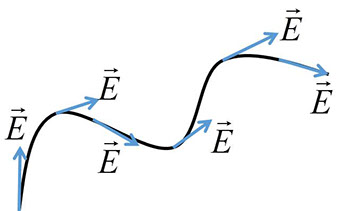
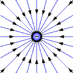
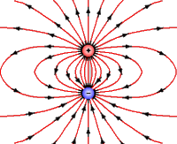
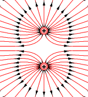

विधुत बल रेखाएँ
- विधुत बल रेखाओं को इस प्रकार से खींचा जाता है कि किसी बिन्दु पर विधुत बल रेखा पर खींची गई स्पर्श रेखा उस बिन्दु पर परिणामी विधुत क्षेत्र की तीव्रता की दिशा को निरूपित करता है।

- एकल धन बिन्दु आवेश की वजह से विधुत बल रेखाएँ

विधुत क्षेत्र रेखाएँ त्रिज्यीतः बाहर की ओर होता है।
- एकल ऋण बिन्दु आवेश की वजह से विधुत बल रेखाएँ

विधुत क्षेत्र रेखाएँ त्रिज्यीतः अंदर की ओर होता है।
- एक धन आवेश तथा एक ऋण आवेश की वजह से विधुत बल रेखाएँ

- दो धन आवेश की वजह से विधुत बल रेखाएँ
